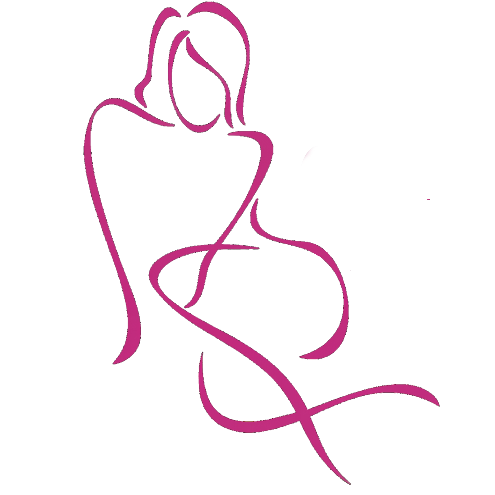
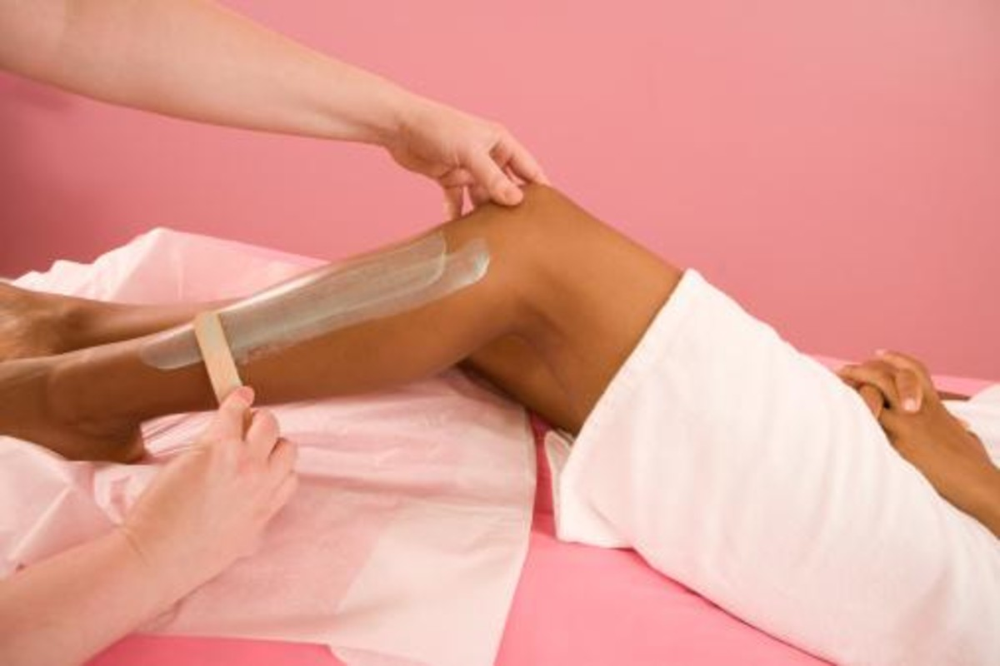
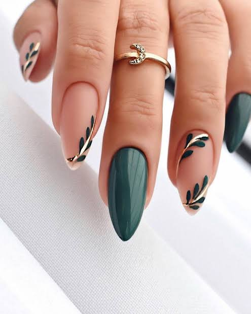
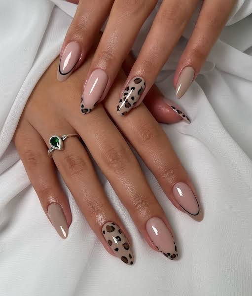
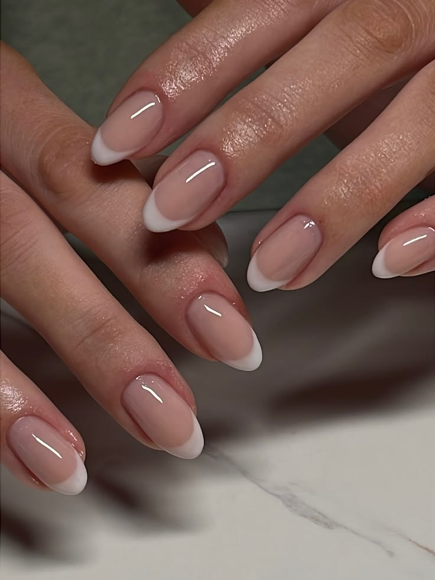

Un espacio para sentirte cómoda con vos mism@
Entre risas y música, en Lynails nos divertimos junt@s
Cuidamos tu piel con la mejor cera de abeja
Contamos con servicio de semipermanente, capping y esculpidas
Vas a poder disfrutar del cuidado de tus pies con parafina

Bienvenida/o a un espacio inspirado en belleza y bienestar. Aquí encontrarás porque deberias hacerte depilacion de cera y tener una buena estetica femenina basada en la estética de que te propondremos a continuacion, con vos como protagonista asi que ve preparando tu set de depilar que aqui te dejaremos porque es bueno usar cera para depilarte.
Descubre técnicas, consejos y un estilo delicado que realza la confianza y el cuidado personal.
Aprende más en nuestro InstagramLa depilación con cera ofrece resultados duraderos, una textura más suave y un acabado profesional. Es ideal para quienes buscan una experiencia de belleza que le dé a la piel un aspecto limpio, cuidado y natural.
Elimina el vello desde la raíz y deja la piel lisa durante semanas.
Regenera la piel y reduce la apariencia de vellos finos con el tiempo.
Un diseño inspirado en belleza que combina color, armonía y una sensación profesional.

Una fina capa de gel o acrílico que se aplica sobre la uña natural para protegerla y mejorar su apariencia.
Beneficios: Mejora la apariencia de las uñas, protege la uña natural y proporciona un acabado brillante.

Color de alta tecnología con secado inmediato en cabina LED/UV que mantiene su brillo intacto desde el primer día.
Beneficios: Mayor durabilidad, acabado brillante y menor necesidad de retoques frecuentes.

Técnica que utiliza moldes y gel o acrílico para crear uñas artificiales con la forma y longitud deseada.
Beneficios: Permite personalizar la forma y longitud, proporcionando un acabado duradero y resistente.